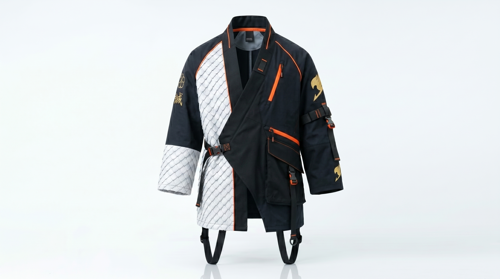
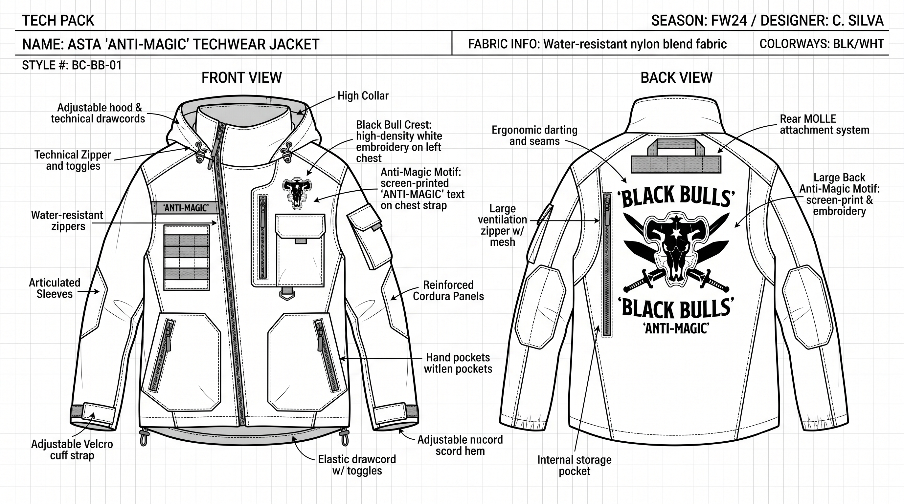

Wear the rebellion to be free, every day.
Cloud is a streetwear atelier — technical silhouettes, Japanese-inspired pattern cutting, and limited drops born from obsessive design craft. From dream to garment, precision lead the way.

Every piece begins with a dream — a mood board, a sketch — we make the sharpest silhouette possible.
Every Cloud collection starts on the mood board. We research fabric swatches, study garment construction from archives across Tokyo and Lisbon, and develop technical sketches that balance proportion with freedom. The dream phase is where rebellion takes its first measurable form — before a single seam is cut, the silhouette already lives in paper and ink.
Read our manifesto
tech pack — every
millimeter is
questioned before
a single cut.

Fabrics, forms, and silhouettes that make you unmistakable.
Every Cloud piece is built around the body in motion — techwear textiles, sharp proportions, and a palette drawn from neon streets and midnight skies.
Techwear
textiles
Japanese cotton-nylon blends, water-resistant membranes, and breathable mesh — each chosen for utility, drape, and edge.
Japanese
cuts
Kimono-inspired draping, layered silhouettes, and oversized proportions that nod to anime's iconic wardrobe language.
A living archive of experiments in techwear, form, and anime-inspired design.

Airweight Tek Jacket
A whisper-weight techwear shell developed with a family mill in Osaka. 40% less fabric mass, 100% of the drape. Wind-resistant, breathable, unmistakable.

Gintama Utility Vest
Inspired by the iconic anime's blend of Edo tradition and modern rebellion. Modular pouches, hidden pockets, and a silhouette that works as outerwear or layering piece.

Modular Silhouette Kit
A 5-piece capsule where every piece layers over every other — one wardrobe, twenty looks. Inspired by anime transformation sequences.


From tech pack to finished form.
Every stage is drafted, sampled, and refined — technical precision meets human form in an endless loop of improvement.
Watch →
We collect signals — street photography, vintage Japanese textile archives, the way light falls on a perfectly draped shoulder seam.

Design →
Sketches become technical packs. Every seam is measured, every panel drafted. Precision is the only language we trust.

Build →
Sample rooms in Lisbon and Tokyo. We fit on real bodies across sizes, shapes, and heights. Techwear precision, streetwear soul.

Drop
Limited releases, no seasons. Each piece ships with a care story, a QR code, and a return bag for the planet.

Nº 01 — The Kimono Shell
An oversized techwear jacket that channels the spirit of a samurai's haori. Japanese cotton-nylon twill, hidden pockets, one continuous seam from shoulder to hem.

Nº 04 — The Shadow Cargo
A wide-leg techwear pant cut from double-weave Japanese nylon. Elastic waist that never pinches, eight pockets, and a drape that clears the ground by exactly the width of a Geta sandal.

“Cloud helped me rediscover what wearing clothes should feel like —sharp, intentional, and completely mine.”
Collaborating with studios, mills, and makers who share our belief in sharp design and fearless identity.

Let's make something sharp and free together.
Subscribe for early access to drops, studio notes, and techwear experiments.